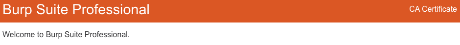

ChromeへBurpのCA証明書をインストール - MacOS
自身のブラウザでHTTPSアプリケーションをテストするには、Burp SuiteのCA証明書をインストールする必要があります。
BurpのCA証明書をインストールする前に、Proxyリスナーが動作しており、Burpと連携するようブラウザを設定できているか確認します。
注
以前、Burpが生成した別のCA証明書をインストールしている場合は、新しいものをインストールする前にそれを削除する必要があります。
Burp SuiteからCA証明書をエクスポートするには:
-
Burp Suiteが起動しているか確認します。
-
Chromeで
http://burpsuiteにアクセスします。
-
"Welcome to Burp Suite Professional"ページで、CA Certificateをクリックして、独自のBurp CA証明書をダウンロードします。
-
CA証明書を保存した場所をメモしておいてください。

注
"Welcome to Burp Suite Professional"ページが表示されない場合は、Proxyのトラブルシューティングページを参照してください。問題の原因によっては、自動的にそこに遷移するかもしれません。
ChromeにCA証明書をインストールするには:
-
Chromeを開き、カスタマイズ (ハンバーガー) メニューに移動します。
-
設定を選択し、プライバシーとセキュリティメニューを開きます。
-
セキュリティメニューから、証明書の管理を選択します。キーチェーンアクセスウィンドウが開きます。
-
システムを選択し、証明書タブを選択します。
-
ダウンロードした証明書を、証明書リストにドラッグ＆ドロップし、必要に応じてパスワードを入力します。
-
キーチェーンアクセスで、
PortSwigger CAのエントリーをダブルクリックします。開いたダイアログで、信頼セクションを展開し、常に信頼するオプションを選択します。必要に応じてパスワードを入力してください。
-
Chromeを再起動します。
-
Burpを実行したまま、HTTPSの任意のURLにアクセスしてください。すべて正常に動作していれば、セキュリティ警告なしでページを参照できるはずです。
Burp SuiteのCA証明書を削除
CA証明書を削除するには:
-
Chromeを開き、カスタマイズ (ハンバーガー) メニューに移動します。
-
設定を選択し、プライバシーとセキュリティメニューを開きます。
-
セキュリティメニューから、証明書の管理を選択します。キーチェーンアクセスウィンドウが開きます。
-
システムを選択し、証明書タブを選択します。
-
証明書を右クリックし、削除を選択します。必要に応じてパスワードを入力してください。